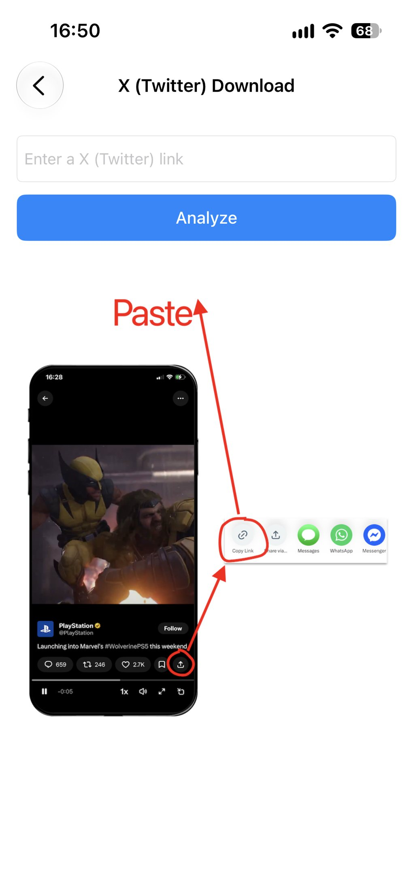
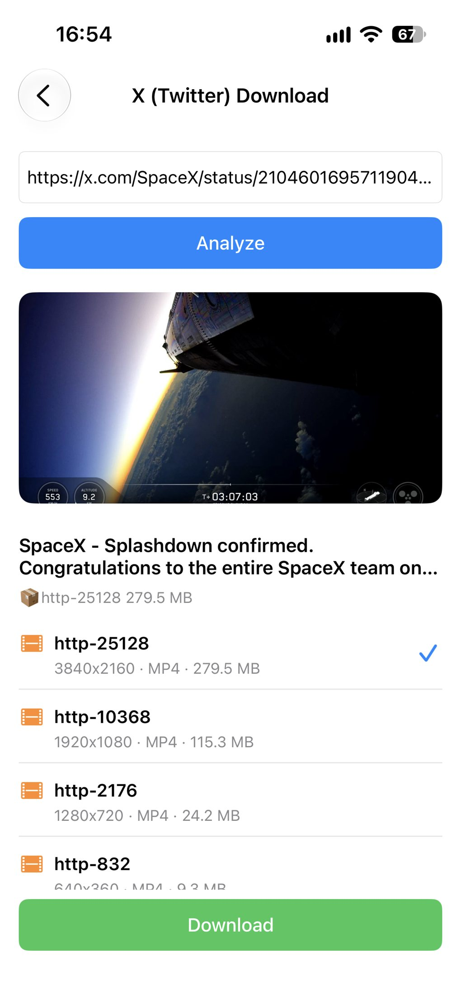

X (Twitter) Videos herunterladen
Du möchtest ein Video von X speichern, um es offline anzusehen oder später zu teilen? Mit ImageGet ist das ganz einfach. Füge den Link eines Beitrags ein, die App analysiert das Video und lädt es direkt in deine Fotomediathek – kein Bildschirmmitschnitt, keine zusätzlichen Tools. Hier erfährst du Schritt für Schritt, wie du X-Videos (Twitter) herunterlädst.
Lade ImageGet kostenlos herunter – X-Videos mit einem Tippen speichern.
ImageGet herunterladenSchritt 1: ImageGet öffnen und Video Download wählen
Öffne ImageGet und tippe auf dem Startbildschirm auf Video Download – dort findest du die Video-Werkzeuge der App.

Schritt 2: X (Twitter) Download auswählen
Tippe anschließend auf X (Twitter) Download. ImageGet wechselt in den X-Modus und wartet auf deinen Link – so bekommst du das Video selbst, nicht nur das Vorschaubild.

Schritt 3: Link zum Beitrag kopieren
Öffne die X-App und suche den Beitrag mit dem Video, das du behalten möchtest. Tippe unter dem Beitrag auf Teilen und dann auf Link kopieren. Im Browser am Computer öffnest du den Beitrag und kopierst die URL aus der Adressleiste.

Schritt 4: Link in ImageGet einfügen
Füge den Link des Beitrags in ImageGet ein. Die App analysiert das Video automatisch – kein Suchen, kein langes Warten. Nach wenigen Augenblicken zeigt dir ImageGet das Video an, bereit zum Herunterladen.
Schritt 5: Video herunterladen
X-Beiträge bieten oft mehrere MP4-Varianten. ImageGet listet jede mit Auflösung und Dateigröße auf, damit du die gewünschte Qualität wählen kannst – tippe anschließend auf Herunterladen. Das Video wird mit Ton in deiner Fotomediathek gespeichert. Du kannst es jederzeit erneut ansehen – auch offline, ohne X zu öffnen.

Tipps zum Herunterladen von X-Videos
- Kostenlose Downloads — der kostenlose Tarif umfasst 3 Video-Downloads für X (Twitter), YouTube Shorts und Facebook Reels; mit Premium sind sie unbegrenzt.
- Qualität wählen — X bietet oft mehrere MP4-Varianten, jede mit Auflösung und Dateigröße, damit du Bildqualität und Speicherplatz abwägen kannst.
- Kein Bildschirmmitschnitt — ImageGet lädt das Video direkt herunter, es entsteht also kein Qualitätsverlust durch erneutes Aufnehmen.
- Beitrags-Links funktionieren auch — eine URL wie x.com/…/status/… lässt sich direkt einfügen.
FAQ
Kann ich X-Videos (Twitter) kostenlos herunterladen?
Ja — der kostenlose Tarif umfasst 3 Video-Downloads für X (Twitter), YouTube Shorts und Facebook Reels. Mit Premium sind die Downloads unbegrenzt.
Werden X-Videos mit Ton gespeichert?
Ja — X-Videos werden als MP4-Dateien mit Ton in der von dir gewählten Auflösung gespeichert.
Muss ich den Bildschirm aufnehmen, um ein Video von X zu speichern?
Nein. ImageGet lädt das Video direkt herunter — ein Bildschirmmitschnitt ist nicht nötig.
Sehen. Speichern. Einfach.
Lade ImageGet kostenlos herunter und speichere X-Videos (Twitter) mit einem Tippen.
ImageGet herunterladen